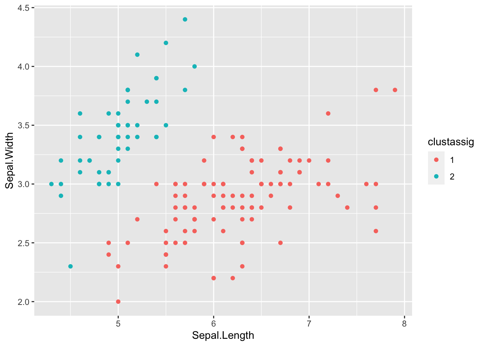

Chapter 15 Clustering
Today, we’ll perform a clustering of the iris dataset, using the K-means clustering method.
15.1 Libraries and Data
We’ll use the following libraries for clustering:
if (!require("cluster")) install.packages("cluster")## Loading required package: clusterif (!require("NbClust")) install.packages("NbClust")## Loading required package: NbClustif (!require("tidyverse")) install.packages("tidyverse")Now, load the iris dataset using the data() function.
data(iris)15.2 Distances
The variables we will use to cluster our data are the four flower measurements in the iris dataset. They all represent the measured length of a segment between two points (e.g. sepal length, petal width), the Euclidean distance is an obvious choice of distance for clustering our observation. The clustering method we will apply to our data (and the ordination methods we applied before) implicitly use the function dist() to calculate distances between observations.
d <- dist(iris[,1:4], method="euclidean")
d <- as.matrix(d)Exercise: Take a look at the first row of this matrix (d[1,]). Under the chosen distance metric, what is the most disparate observation from specimen 1? What is the distance between this specimen and specimen 1? Do these specimens belong to different species? (Hint: the species ID is stored in the origin iris data frame)
15.3 K-means clustering
Ok, we’re almost ready to cluster our data. There are just a few preliminary details to keep in mind.
The first of these details is that our variables lie on different scales: some span a wider range of variation than others. A common practice in clustering is to scale all variables in our data such that they are mean-centered and have a standard deviation of 1, before performing the clustering. This ensures that all variables have the same “vote” in the clustering. If we don’t scale, then variables that have large amounts of variation (large standard deviations) will disproportionately affect the Euclidean distance, and therefore our clustering will be highly influenced by those variables to the detriment of other variables. This is not inherently wrong, but it is important to keep in mind that unscaled data might result in different clusters than scaled data. To scale our data, we use the function scale().
df <- scale(iris[,1:4])Exercise: what’s the mean and standard deviation of each of the four variables in the iris dataset before scaling? what is their mean and standard deviation after scaling?
Ok, now on to the second preliminary detail. Clustering methods require the specification of the number of clusters that we a priori choose to fit the data to. Deciding on what is the “best” number of clusters depends on a number of criteria (e.g. minimizes the total within-cluster variance, homogenizing per-cluster variance, etc), and there are many methods with different criteria. We’ll use the function NbClust which runs 26 of these different methods on our data for assessing the “best” number of clusters. We’ll then choose to use the number of clusters that is recommended by the largest number of methods.
numclust <- NbClust(df, min.nc=2, max.nc=15, distance="euclidean", method="kmeans")## *** : The Hubert index is a graphical method of determining the number of clusters.
## In the plot of Hubert index, we seek a significant knee that corresponds to a
## significant increase of the value of the measure i.e the significant peak in Hubert
## index second differences plot.
## ## *** : The D index is a graphical method of determining the number of clusters.
## In the plot of D index, we seek a significant knee (the significant peak in Dindex
## second differences plot) that corresponds to a significant increase of the value of
## the measure.
##
## *******************************************************************
## * Among all indices:
## * 10 proposed 2 as the best number of clusters
## * 6 proposed 3 as the best number of clusters
## * 1 proposed 4 as the best number of clusters
## * 1 proposed 5 as the best number of clusters
## * 3 proposed 12 as the best number of clusters
## * 1 proposed 14 as the best number of clusters
## * 2 proposed 15 as the best number of clusters
##
## ***** Conclusion *****
##
## * According to the majority rule, the best number of clusters is 2
##
##
## *******************************************************************table(numclust$Best.n[1,])##
## 0 2 3 4 5 12 14 15
## 2 10 6 1 1 3 1 2It seems like ten of the methods suggest that the best number of clusters should be 2. There is also a considerable (but smaller) number of methods (six), that suggest it should be 3.
barplot(table(numclust$Best.n[1,]),
xlab="Number of Clusters", ylab="Number of Criteria", main="Number of Clusters Chosen by 26 Criteria")
Let’s go with 2 clusters then. We are now finally ready to perform a K-means clustering. We do so as follows:
fit.kmeans <- kmeans(df, 2)The cluster assignments for all observations are stored in the “cluster” attribute of the resulting object:
clustassig <- fit.kmeans$cluster
clustassig## [1] 2 2 2 2 2 2 2 2 2 2 2 2 2 2 2 2 2 2 2 2 2 2 2 2 2 2 2 2 2 2 2 2 2 2 2 2 2
## [38] 2 2 2 2 2 2 2 2 2 2 2 2 2 1 1 1 1 1 1 1 1 1 1 1 1 1 1 1 1 1 1 1 1 1 1 1 1
## [75] 1 1 1 1 1 1 1 1 1 1 1 1 1 1 1 1 1 1 1 1 1 1 1 1 1 1 1 1 1 1 1 1 1 1 1 1 1
## [112] 1 1 1 1 1 1 1 1 1 1 1 1 1 1 1 1 1 1 1 1 1 1 1 1 1 1 1 1 1 1 1 1 1 1 1 1 1
## [149] 1 1We can use this vector to plot our data, colored by the resulting clusters.
clustassig <- as.factor(clustassig) # Treat the cluster assignments as discrete factors
irisclust <- data.frame(iris,clustassig) # Combine data with cluster assignments
ggplot(data=iris) + geom_point(aes(x=Sepal.Length,y=Sepal.Width,color=clustassig)) # Plot sepal variables
ggplot(data=iris) + geom_point(aes(x=Petal.Length,y=Petal.Width,color=clustassig)) # Plot petal variablesExercise: Now try computing a K-means clustering on the data yourself, this time using 3 clusters. Plot the result using a different color for each cluster.
Exercise: How well do the clusters from the previous exercise correspond to the 3 iris species? Are they perfectly matched? Why? Why not?